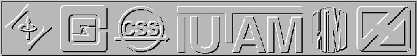

COC 2000 National Organizing Committee
A.L. Fradkov (Chairman)
D.A. Indejtsev (Vice-Chairman)
G.A. Leonov (Vice-Chairman)
B.R. Andrievsky
A.N. Churilov
O.N. Granichin
V.O. Nikiforov
V.B. Smirnova
D. Tomchin
 Back
to the COC 2000 Home page
Back
to the COC 2000 Home page
Address of the Organizing Committee:
Prof.A.L.Fradkov
The Institute for Problems of Mechanical Engineering
61 Bolshoy, V.O. 199178, St.Petersburg, RUSSIA
Tel: +7(812)321-4766,
Fax: +7(812)321-4771 (no manuscripts)
E-mail: coc2000@ccs.ipme.ru,
ccs@alf.ipme.ru
This page is constructed by D.
Tomchin. Last Updated: February, 22 2000. All comments are welcome.